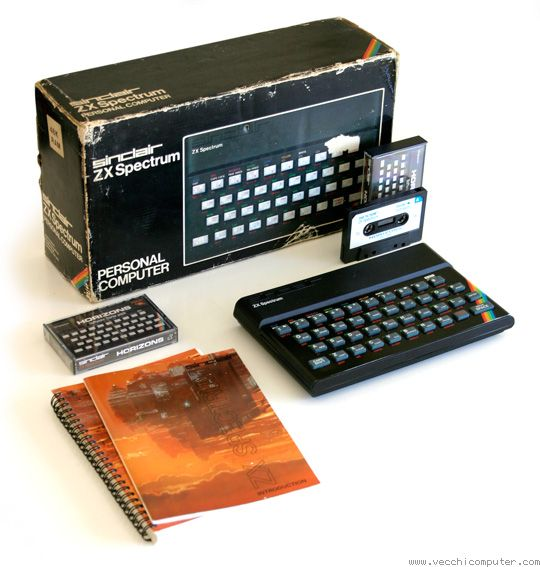

ZX Spectrum
El Sinclair ZX Spectrum es un ordenador de 8 bits basado en el microprocesador Zilog Z80A, fabricado por la compañía británica Sinclair Research y lanzado al mercado el 23 de abril de 1982.
En Europa, el Sinclair ZX Spectrum fue uno de los microordenadores domésticos más populares de los años 1980. Aún hoy perduran miles de aficionados del Spectrum que siguen jugando a sus juegos (con emuladores que cargan sus ficheros volcados de cintas). Además hay un mercado de coleccionismo tanto de cintas de juegos originales como de los propios Spectrum. de Wikipedia
